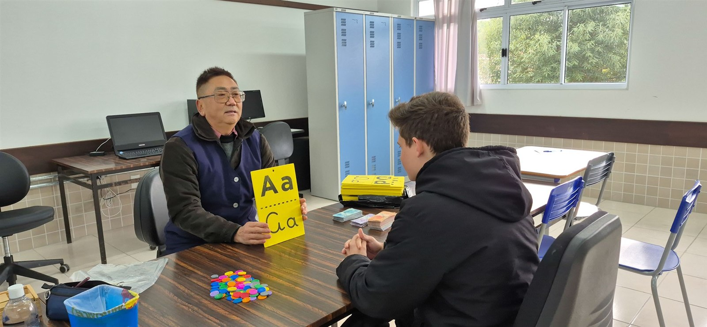
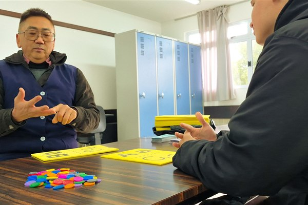
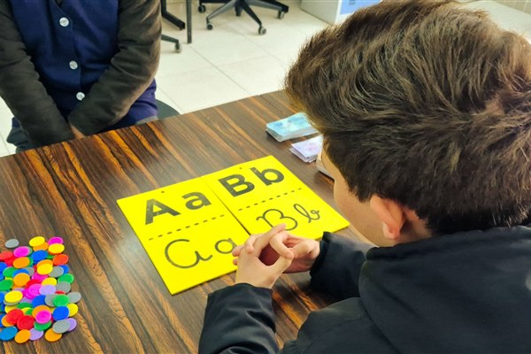
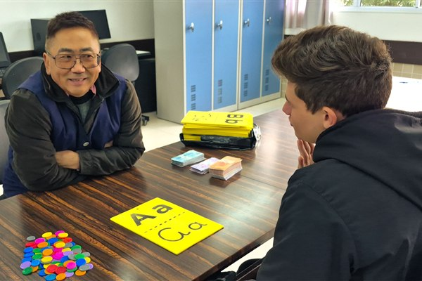
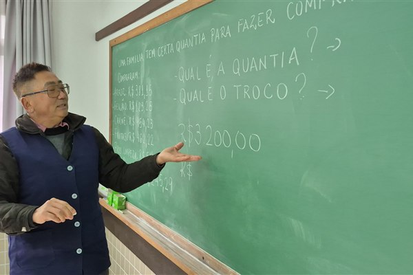
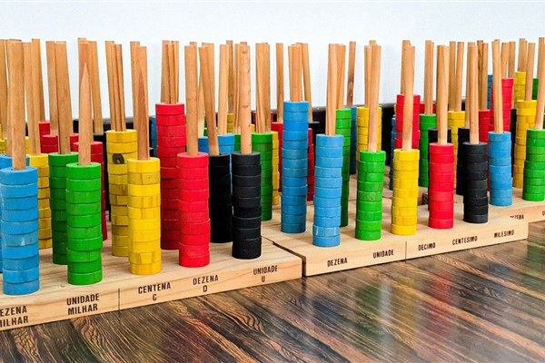

Ritmos respeitados
O estudante pode precisar de mais tempo, de uma pausa ou de uma explicação retomada. Esses ritmos são considerados.

Apoio à aprendizagem
O Apoio é um reforço escolar voltado a estudantes neurodivergentes. O trabalho parte das necessidades de cada estudante e da forma como ele organiza seus estudos.
Quando uma explicação não funciona, é possível retomar o conteúdo, dividir a tarefa em etapas ou experimentar outro recurso. A ideia é tornar o estudo mais claro e possível de acompanhar.

Como funciona
O estudante pode precisar de mais tempo, de uma pausa ou de uma explicação retomada. Esses ritmos são considerados.
Textos, imagens, exemplos e exercícios podem ser combinados de acordo com o conteúdo e com a necessidade do estudante.
Perguntar, errar e tentar de novo fazem parte do processo de aprender.


Estratégias de aprendizagem
As estratégias mudam conforme a necessidade. Podem ajudar a entender uma atividade, retomar um assunto ou planejar o que precisa ser feito.

Separar tarefas, combinar etapas e definir o que vem primeiro.
Voltar a um assunto e praticar até que ele fique mais claro.
Usar imagens, esquemas, exemplos e anotações para estudar.
Perceber o que já foi feito e decidir qual será o próximo passo.
Registros do Apoio
Atividades, materiais e momentos de acompanhamento que fazem parte do cotidiano do Apoio.

Como participar
Converse com a equipe pedagógica para saber como o Apoio funciona, quais são os horários e como está a disponibilidade do reforço.